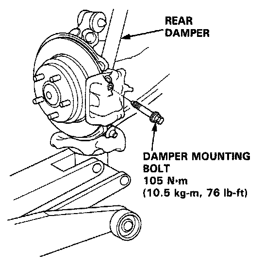
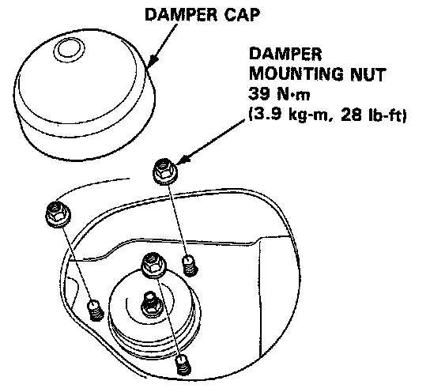

Installation
Installation
1. Lower the rear suspension and set the damper assembly in its original position.
2. Loosely install the damper mounting bolt.
3. Raise the rear suspension with a floor jack until the weight of the car is on the damper.
NOTE:
- The damper mounting bolts should be tightened with the damper under vehicle load.
- Do not interchange the right and left dampers.

CAUTION: Install the damper assembly on the damper bracket with care not to allow the speed sensor wire to get caught between the damper and the bracket.
4. Install and tighten the damper mounting nuts.
5. Tighten the damper mounting bolt.

6. Install the damper cap and rear speaker.